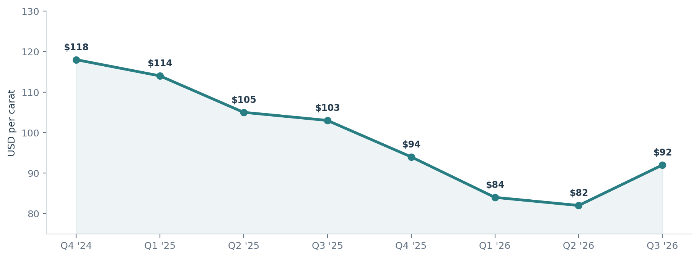
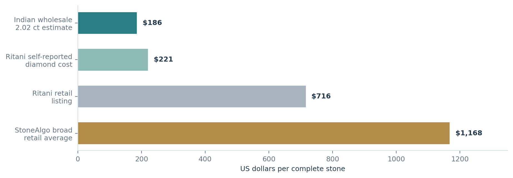
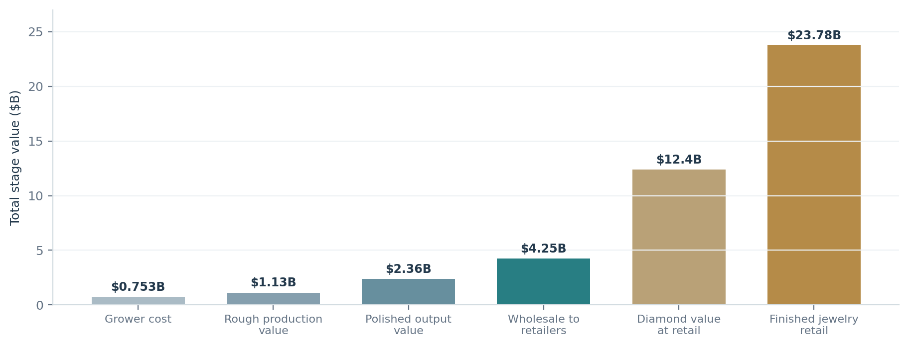
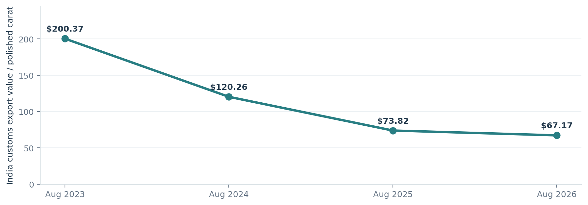

The Wholesale Diamond Market
Searchable transcription of the November 2026 source. See the original for pagination, exact layout and exhibits.
MARKET INTELLIGENCE | DIAMONDS
A complete research dossier on lab-grown diamond pricing, price history, industry economics, natural-diamond comparisons, and China-direct pendant sourcing
Research cut-off 15 November 2026
Primary benchmark Q3 2026 (quarter ended September 2026)
Scope All material findings, observations and calculations from this conversation, with source inventory and updated verification notes.
| KEY FIGURE | WHAT IT MEANS |
|---|---|
| $92/ct | Q3 2026 E–F / VS, 2 ct fancy-cut IGI-certified wholesale average [01] |
| $185.84 | 2.02 ct stone estimated by multiplying the $92/ct group average [calculation] |
| ≈93% lower | Golan wholesale index change since tracking began in Q3 2018 [02] |
| $447.88 | Documented 14K gold, pendant-only supplier quote from the conversation [U] |
| $23.78B | Estimated worldwide 2025 retail sales of lab-grown diamond jewelry [06] |
IMPORTANT INTERPRETATION
Wholesale transaction averages, customs values, advertised retail listings, a supplier quotation, and hypothetical material-cost models are not interchangeable. This report labels each evidence type and cites its underlying source. The original conversation contained some prior as-of-date figures; where newer snapshots are available, both are preserved and dated.
This is a purchasing and market-research document, not a gemological appraisal, legal determination, audit of supplier costs, or guaranteed trade offer.
Contents
1. Executive findings and decision summary
2. Sources, definitions and methodologies
3. Q3 2026 wholesale price benchmarks
4. Historical pricing and archive timeline
5. Wholesale versus consumer retail
6. Custom pendant and gold-content economics
7. Production cost and global value chain
8. Export prices and international trade
9. Natural diamond comparison and price systems
10. Quality, grading, cut and growth method
11. Recent market movements and outlook
12. Supplier diligence and negotiation framework
13. Conclusions
Appendix A. Calculation workbook in text
Appendix B. Expanded industry statistics from supplied source
Appendix C. Complete source bibliography and archive index
Appendix D. Original research notes and caveats
1. Executive findings and decision summary
The most important economic insight is that a certified, commercially acceptable 2-carat lab-grown oval or pear diamond can now change hands in India at a price well below $250. In Golan’s Q3 2026 wholesale list, E–F/VS fancy stones in the 2 ct size band averaged $92 per carat, implying about $184 for an exactly 2.00 ct stone and $185.84 for 2.02 ct using a straight multiplication. These figures describe a market category, not an offer for a uniquely identified diamond. [01]
The wholesale index has fallen approximately 93% from its July 2018 starting point. The dramatic decline reflects improved CVD/HPHT manufacturing, capacity expansion, overproduction, strong competition and growing availability of larger stones. Current prices may be stabilizing at the wholesale level, but a single positive quarter does not establish a floor. [02,03,12]
Independent indicators support the direction and scale of wholesale deflation. In August 2026, Indian customs data showed an average $67.17 per carat for polished lab-diamond exports (all qualifying sizes and qualities together). A separately observed U.S. retailer listed 2.02 ct E/VS2 IGI oval stones at $716, with an advertised cost breakdown of $220.54 wholesale acquisition, $164.50 fulfillment and $330.96 retailer markup. The retailer figures are self-reported rather than audited. [08,09]
The user’s 2.02 ct E/VS2 IGI 14K yellow-gold pendant quotation of $447.88 before international shipping is consistent with competitive direct-supplier economics, subject to verifying the specific stone, gold fineness and actual metal weight. The quote should be judged as a complete jewelry transaction; the $186 indicative diamond value cannot be subtracted to reveal true supplier profit. [U,01]
Decision implications
• Compare like-for-like IGI numbers, proportions, bow-tie/light performance and actual videos rather than carat-color-clarity grades alone.
• Negotiate a confirmed gold-only weight and final delivered price, rather than relying on an ambiguous “net weight” on an early invoice.
• Expect very modest absolute wholesale-dollar savings from waiting for another diamond-price decline; gold weight, workmanship and supplier reliability can dominate the finished-price comparison.
• Use an India wholesale transaction benchmark as an anchor, not a promise that the chosen Chinese workshop can buy at that exact level.
• Keep certification, payment protection, CAD specifications, import treatment and post-sale remedies in the purchase decision.
2. Sources, definitions and methodologies
The research draws on primary Indian wholesale transaction data from Edahn Golan Diamond Research & Data, a source page pasted into this conversation, retailer price listings, independent industry reporting, government trade-data compilations, a new global production/value-chain model, and the documented pendant quote. Figures were cross-checked where the live source remained available. [01–09, U]
| MEASURE | DEFINITION / IMPORTANT LIMITATION |
|---|---|
| Wholesale transaction price | Average cash transaction price per polished carat in Mumbai/Surat for small-volume IGI-certified goods; typically excludes logistics and tax. |
| Customs export unit value | Total declared export value divided by total exported carats. A heterogeneous basket, not a particular grade-specific stone quote. |
| Retail asking/listing price | Advertised or aggregated consumer-facing price; not proof the stone sold at that figure. |
| Retailer “wholesale cost” | A retailer-provided cost breakout; informative but unverified without invoice evidence. |
| Rough-growing cost | Estimated reactor and grower cost for a rough carat, before yield loss, cutting, grading and sale. |
| Supplier quotation | Actual proposed transaction terms; may change with final gold weight, CAD, taxes, freight or payment terms. |
| Intrinsic gold value | Gold purity fraction × metal-alloy mass × spot price per gram of pure gold. Excludes fabrication and other costs. |
What the supplied September 2026 statistics page says
Golan’s Diamond Statistics page states that its wholesale dataset is drawn from loose certified diamonds sold at diamond trading centers in Mumbai and Surat; its published quarterly grid covers sizes of at least 1 ct, selected color/clarity groups and several shapes. Its U.S. retail data is collected weekly via Tenoris from 2,500 U.S. jewelry retailers, with transaction records starting January 2020. The publisher states that this panel represents roughly 10% of specialty jewelers and 5.5% of jewelry demand. [04, U]
A major methodological break occurred after Q2 2024: the early history measured manufacturer parcel transactions and smaller stones, while later quarterly lists emphasize certified small-volume transactions and 1–3 ct goods. As a result, long-run index declines and individual grade/shape series cannot be conflated without noting the change. [04]
3. Q3 2026 wholesale price benchmarks
The original PDF, dated “Quarter ending September 2026”, reports IGI-certified small-volume transactions and explicitly includes fancy shapes (heart, marquise, oval, pear) and square shapes (Asscher, cushion, emerald, princess, radiant). Its cash transaction prices are based on Mumbai and Surat. [01]
Selected E–F color wholesale price data
| SIZE / SHAPE | VVS / CT | VS / CT |
|---|---|---|
| 1 ct round | $85 | $81 |
| 1.5 ct fancy | $85 | $82 |
| 2 ct round | $82 | $79 |
| 2 ct fancy (oval/pear) | $98 | $92 |
| 2 ct square / radiant | $84 | $81 |
| 3 ct fancy | $99 | $92 |
Selected entries only, not a republication of the full copyrighted price grid. Source: Golan Q3 2026 [01].
Estimated complete-stone values
| DESCRIPTION | CALCULATION | ESTIMATED PRICE |
|---|---|---|
| 1.50 ct E–F / VS fancy | 1.50 × $82 | $123.00 |
| 1.50 ct E–F / VVS fancy | 1.50 × $85 | $127.50 |
| 2.00 ct E–F / VS fancy | 2.00 × $92 | $184.00 |
| 2.02 ct E / VS2 oval | 2.02 × $92 | $185.84 |
| 2.02 ct E / VVS fancy | 2.02 × $98 | $197.96 |
| 3.00 ct E–F / VS fancy | 3.00 × $92 | $276.00 |
A particular E/VS2 stone may trade above or below the E–F/VS group mean. The reference groups VS1 and VS2 together and does not adjust for face-up spread, bow-tie, shape, cut, report date, growth technique or supplier relationship.
2 ct fancy-cut grade premium analysis
| COLOR / CLARITY | BENCHMARK PER CT | 2.00 CT VALUE | DELTA VS E–F / VS |
|---|---|---|---|
| G–H / VS | $81 | $162 | –$22 |
| E–F / VS | $92 | $184 | Reference |
| E–F / VVS | $98 | $196 | +$12 |
| D / VS | $103 | $206 | +$22 |
| D / VVS | $114 | $228 | +$44 |
Within these group averages, the indicated jump from E–F/VS to D/VVS is only $44 on a 2 ct fancy stone. This is a market-level comparison, not a guaranteed upgrade fee from any vendor. [01]
4. Historical pricing and archive timeline
Golan’s current index is approximately 93% below its first observed July 2018 level. Earlier reporting described an 86.5% drop by March 2024 and an approximately 96% drop in the Q2 2026 index; differences among index vintages should be reported with dates and methodology. [02,03,11,12]

Figure 1. Previously reported quarter-by-quarter E–F/VS, 2 ct fancy-shape series (USD/ct). The prior conversation supplied these eight observations; the full historical PDF series was not independently re-downloaded for this export. Use the original quarterly lists for audited historical replication. [Original thread; 02]
The eight recorded points are Q4 2024 $118, Q1 2025 $114, Q2 2025 $105, Q3 2025 $103, Q4 2025 $94, Q1 2026 $84, Q2 2026 $82 and Q3 2026 $92 per carat. This is an approximately 30.5% decline from Q4 2024 to Q2 2026 and then a 12.2% quarter-on-quarter rebound in the selected category. The original answer called the collection “nine consecutive” lists; only eight quarters were actually enumerated. [Original thread]
Production economics historical milestones
| YEAR / PERIOD | REPORTED MILESTONE |
|---|---|
| 2008 | Bain-era estimate: about $4,000 to grow a 1 ct G/VS diamond, excluding polishing and grading. |
| 2013 | Estimated production cost around $1,600–$2,000 for a comparable one-carat example. |
| 2018 | Estimated production cost about $300–$500; Golan begins quarterly wholesale tracking. |
| 2020–2021 | Bain-related reporting placed wholesale lab diamond pricing near 20%, then 14%, of natural equivalents. |
| March 2024 | Golan interview reports wholesale index down 86.5% from Q3 2018. |
| 2025 | Industry reporting states average LGD wholesale prices declined 26% during the year. |
| Q1–Q2 2026 | Year-over-year declines of about 14% (Q1) and 13% (Q2) reported. |
| Q3 2026 | Selective quarterly increases: 1–3 ct rounds ~+2%, fancy/square over +7.5% in aggregate. |
The 2008–2018 estimates are rough production-cost estimates, not polished wholesale prices; the Bain ranges were described in the earlier conversation and are included as historical context, not independently reconciled in this export. [10–13]
Archived articles and what each contributes
2018 · JCK, “Lab-Grown Diamond Production Rises, but Prices Fall”
Bain-associated cost reductions and the early expectation that lower-cost CVD production would increase commercial supply. [10]
2021 · JCK, “A Veteran Diamond Industry Analyst Trains His Eye On Lab-Grown Prices”
History of Golan’s tracking starting mid-2018 and the trade’s shift in willingness to sell lab diamonds. [11]
2022 · Rapaport, “The Economics of Lab-Grown”
An early-stage wholesale versus natural-diamond comparison near 14% and emerging stabilization claims. [13]
2023 · JCK, “The Long History of Stabilizing Lab-Grown Diamond Prices”
Archived repeated price-bottom predictions that were later contradicted by the decline. [12]
March 2024 · JCK, “Edahn Golan on Lab-Grown Prices’ Downward Spiral”
86.5% wholesale fall since 2018 and estimated 60–68% gross retail margins at that time. [14]
May 2025 · De Beers announces intention to close Lightbox
Lightbox launched with linear $800/ct pricing in 2018; De Beers cited roughly 90% wholesale erosion. [15]
July 2026 · JCK, “Prices Show Signs of Stabilizing”
Q2 market still down year on year; period-to-period index declines decelerating. [16]
August 2026 · JCK, “Wholesale Prices Are in Freefall”
Retail inventory, memo goods and the risk of restocking at successively lower costs. [17]
October 2026 · Golan Q3 commentary
New evidence of selective quarter-on-quarter price increases, but continued annual weakness. [02]
Archived claims about prices “bottoming” should be read as predictions made at that moment, not validated evidence that a floor was reached. Several such predictions failed as capacity expanded. [12]
5. Wholesale versus consumer retail
An illustrative U.S. retailer listing matches the user’s broad grading target: a Ritani 2.02 ct E/VS2 IGI-certified oval shown at $716. Ritani’s own displayed breakdown was $220.54 “wholesale diamond cost”, $164.50 fulfillment and $330.96 retailer markup. It sums to $716.00. The full cost stack is disclosed by Ritani, not independently verified with supplier invoices. [09]
| CHANNEL / COMPONENT | AMOUNT | INTERPRETATION |
|---|---|---|
| Golan category benchmark × 2.02 | $185.84 | Indian small-volume average extrapolation |
| Ritani stated acquisition cost | $220.54 | Self-reported US retailer cost |
| Ritani fulfillment | $164.50 | Self-reported operational component |
| Ritani markup | $330.96 | Self-reported retailer component |
| Ritani advertised total | $716.00 | One 2.02 ct E/VS2 IGI oval listing |
| StoneAlgo broad oval retail average, 13 Nov | $1,168 | Across 54,530 2 ct-ish lab oval listings |

Figure 2. Pricing levels shown as price per stone. The StoneAlgo average contains many grades and is not controlled to E/VS2; the two Ritani amounts are parts of one displayed cost structure. [01,08,09]
Calculations: $220.54 / $185.84 = 1.187× (Ritani stated cost is ~18.7% above the extrapolated Indian category benchmark); $716 / $185.84 = 3.853×; $1,168 / $185.84 = 6.285×. None of these ratios equals a pure profit margin because the denominators cover different channel functions and grade mixes.
The original thread recorded StoneAlgo on November 9, 2026 at $1,164 across 54,607 listings, with approximately $228–$3,036 listing range. A later source snapshot dated November 13, 2026 placed the mean at $1,168 across 54,530 listings, the range at $238–$3,028, the natural oval comparison at $19,651 and the prior-month lab change at –14.05%. This report preserves both dated observations rather than treating them as inconsistent measurements. [08]
Caution: several Ritani pages display the identical $220.54 supplier-cost value, suggesting at least some standardized or batch-level pricing behavior. The breakdown is useful as a retailer pricing illustration but should not be regarded as audited cost evidence for each unique IGI report. [09]
6. Custom pendant and gold-content economics
Quotation discussed in this conversation: Tonglin Industrial Co., Limited / quotation headed Guangzhou Tonglin Jewelry Co., Ltd.; pendant only, 2.02 ct oval E/VS2 IGI lab diamond, solid 14K yellow gold, quoted $447.88; the 18K version was quoted at $543.47. A $45 freight allowance was discussed and the 14K quotation includes a CAD/wax component. The estimated metal or net weight was presented as about 1.50 g for 14K and approximately 2.00 g for 18K, but gold-only versus total-weight terminology required clarification. These are user-supplied negotiation facts, not independent third-party supplier verification. [U]
| METRIC | 14K VERSION | 18K VERSION |
|---|---|---|
| Pendant-only quoted price | $447.88 | $543.47 |
| International shipment assumption | +$45.00 | +$45.00 |
| Price with quoted shipping | $492.88 | $588.47 |
| Price difference between metals | — | +$95.59 |
| Weight requiring written clarification | 1.50 g estimate | 2.00 g estimate |
Illustrative 14K cost-stack analysis
The prior conversation used an indicative November 11 spot gold assumption of $128.09/g for pure gold. At that particular assumed spot, 14K has intrinsic gold value of 128.09 × (14/24) = $74.72/g. A 1.50 g 14K alloy mount consequently contains about $112.08 of pure gold value. It is a metal-content model, not the supplier’s declared bill of materials. [U]
| ILLUSTRATIVE COMPONENT | VALUE |
|---|---|
| 2.02 ct E/VS2 oval, Indian benchmark | $185.84 |
| 1.50 g of 14K gold alloy, gold content only | $112.08 |
| Residual of $447.88 quote after these two estimates | $149.96 |
| Total quoted pendant price | $447.88 |
The $149.96 residual would have to cover mounting fabrication, casting/finishing, stone setting, non-gold alloy materials, QA, design/CAD charges if applicable, overhead, risk and margin. It is not a measure of supplier profit. If 1.50 g includes the diamond, the 2.02 ct stone itself weighs 0.404 g, leaving about 1.096 g of metal and approximately $81.89 of intrinsic gold rather than $112.08.
A newly inspected historical gold table gives about $128.60/g for November 11, 2026; another contemporaneous intraday source showed $129.19/g. These values differ from the $128.09 model input by less than 1%. For consistency with the prior published analysis, the $128.09 model is kept intact and explicitly labeled as an assumed spot input rather than a spot-rate fact. At $128.60/g, 1.50 g of 14K would be worth about $112.53 in pure-gold terms. [18]
Intrinsic gold-value sensitivity, using the earlier $128.09/g model
| KARAT | GOLD FRACTION | PURE-GOLD VALUE / g ALLOY |
|---|---|---|
| 10K | 10/24 = 41.67% | $53.37 |
| 14K | 14/24 = 58.33% | $74.72 |
| 18K | 18/24 = 75.00% | $96.07 |
At equal 1.50 g metal weight, replacing 14K with 18K would add only about $32.03 in intrinsic gold content at the previous model spot rate. However, the actual manufacturer’s 18K quote also contemplated a different metal weight. If the 18K mount really weighs 2.00 g, its intrinsic gold alone would be approximately $192.14 (versus $112.08 for the 1.50 g 14K version), an $80.06 content difference. That helps explain more of the quoted $95.59, but neither weight nor the quotation build is confirmed as a final assay. [U]
The critical request to a manufacturer is “finished NET GOLD/ALLOY WEIGHT, excluding diamond(s), with actual weight adjustment methodology”. The difference between 1.50 g net metal and 1.50 g complete pendant materially alters any metal-value estimate.
7. Production cost and global value chain
Golan and Eyal Axelrod published “From Reactor to Retail: The 2025 Lab-Grown Diamond Value Chain” on November 3, 2026. It models an estimated 69.4 million gem-quality laboratory-grown carats in 2025, as against 98.8 million carats of natural rough mined. Rough growth cost was about $753 million (approximately $10.85 per rough carat), and rough production value was about $1.13 billion (approximately $16 per carat). [06,07]

Figure 3. Aggregate global value carried at each successive industry stage, 2025, US$ billions. These are cumulative stage values, not amounts to add together. Credit: Edahn Golan Diamond Research & Data / Eyal Axelrod, Lab-Grown Diamond Value Chain 2025 (CC BY 4.0). [07]
| 2025 VALUE-CHAIN STAGE | TOTAL INDUSTRY VALUE |
|---|---|
| Grower production cost | $0.753 billion |
| Rough LGD production value | $1.13 billion |
| Incremental manufacturing / polishing cost | $1.23 billion |
| Value of polished production | $2.36 billion |
| Polished LGD wholesale sales to retailers | $4.25 billion |
| Diamond content at consumer retail | $12.40 billion |
| Complete lab-grown diamond jewelry retail sales | $23.78 billion |
The separate industry stages should not be added indiscriminately: for example, polished production value already comprises rough production value plus manufacturing costs. The report calculates 21.0× retail finished-jewelry value relative to rough production value, with diamond content representing 52.1% of finished-jewelry retail value. The estimated rough-growing cost constitutes only around 3.2% of finished-jewelry retail dollars; that does not imply the rest is net profit. [07]
Manufacturing and demand geography
The report assigns 2025 grower cost of roughly $0.39B to India, $0.27B to China and $0.08B to the United States. It estimates India grew about 8% more gem-quality carats than China in 2025 and polishes virtually all commercial lab-grown output. This matters for Chinese jewelry vendors: the mounting can be fabricated in China even when the loose diamond was polished and traded in India. [06,07]
| MARKET | 2025 FINISHED LAB-DIAMOND JEWELRY RETAIL SALES |
|---|---|
| United States | $17.36B |
| China | $1.98B |
| Europe & South Pacific | $1.66B |
| India | $1.31B |
| Gulf | $0.71B |
| Japan | $0.24B |
| Other | $0.52B |
| Worldwide | $23.78B |
U.S. specialty-jeweler research found lab-grown diamonds in approximately 53% of diamond engagement rings sold by units in 2025, but only about 27% of engagement-ring sales value. Separate industry reporting put the average spending on a lab-grown-set engagement ring at $2,448, nearly 8% lower year over year, while the average loose lab-grown engagement-ring diamond size reached about 2.26 ct. Retailers’ 2025 unit purchases reportedly increased faster than their unit consumer sales, pointing to potential inventory accumulation. [06,19]
8. Export prices and international trade
International customs unit values provide a second, conceptually different price check. The GJEPC-reported average polished lab-diamond export price during April–September 2026 was previously reported at $67.32/ct, versus $692.36/ct for natural polished diamond exports; the lab-grown export total was said to be approximately $685.1M. This specific six-month calculation comes from the prior conversation’s secondary reporting and was not revalidated from an original GJEPC release during document generation. [Original thread]
The more readily inspectable CaratWatch compilation uses DGCI&S TRADESTAT monthly Indian government trade values. It reports an August 2026 average of $67.17/ct for polished lab-grown exports, approximately 9% below August 2025, and roughly 1.97 million exported polished carats that month. These are trade-mix averages rather than a grade-specific certified diamond benchmark. [05]

Figure 4. August Indian customs unit values for polished lab-grown exports, 2023–2026, from government-data compilation (USD/ct). Changes may reflect product mix as well as like-for-like price. [05]
| INDIAN EXPORT OBSERVATION | POLISHED LAB DIAMOND USD / CT |
|---|---|
| August 2023 | $200.37 |
| August 2024 | $120.26 |
| August 2025 | $73.82 |
| August 2026 | $67.17 |
The August 2023-to-August 2026 decrease is ~66.5%. CaratWatch also reported August 2026 rough laboratory-grown diamond import value of $15.14/ct; September 2026 Chinese rough lab-grown exports averaging $9.33/ct; September Chinese polished lab-grown imports around $97.28/ct; and September U.S. cut lab-grown imports of about $31.7M. These unit-value measures describe different goods at different supply-chain stages. [05]
International natural-diamond trade from the supplied Golan statistics page
The uploaded September 28, 2026 statistics page included an extensive historic trade dataset with natural-diamond-dominated polished and rough figures by country. Because these tables describe broader diamond trade and are not lab-grown price lists, they are summarized separately, without confusing aggregate import price/carat with lab-certified wholesale quotes. [04, U]
| COUNTRY / METRIC | 2025 | 2024 |
|---|---|---|
| India polished diamond exports | $12.53B / 17.04M ct / $735 per ct | $13.79B / 17.02M ct / $810 per ct |
| Hong Kong polished imports | $10.72B / 11.13M ct / $963 per ct | $10.77B / 10.98M ct / $981 per ct |
| Hong Kong polished exports | $10.07B / 9.58M ct / $1,050 per ct | $10.72B / 10.22M ct / $1,048 per ct |
| Belgium polished exports | $6.18B / 2.65M ct / $2,334 per ct | $8.00B / 3.26M ct / $2,457 per ct |
| U.S. polished diamond imports | $5.46B / 3.50M ct / $1,559 per ct | $15.73B / 7.61M ct / $2,067 per ct |
These figures reproduce selected entries of the user-provided Golan page. The page contains apparent source transcription anomalies in certain other historical columns; the selected figures are not independently audited customs records. See Appendix B.
For 2024, Golan attributed about 45% of U.S. polished diamond import value and 78% of volume to India, followed by Israel at 28% of value and Belgium at 10%. The page’s 2025 source-country figures show India ~$2.6B, Israel ~$1.43B and Belgium ~$0.63B of U.S. polished imports. Those are customs values and should not be presented as market capitalization, retail spend or lab-only purchases. [04]
The supplied page also reported 2025 natural diamond production of approximately 99M carats, down 5.8% year over year, with average mined production value $93/ct, according to Kimberley Process figures. It reports De Beers 2025 rough diamond sales of $3.49B and output of 21.7M carats; 2024 was $3.29B and 24.7M carats. [04]
9. Natural diamond comparison and price systems
Natural polished diamonds and laboratory-grown stones must now be priced in separate market structures. Natural diamond dealer price sheets such as Rapaport and the IDEX inventory index primarily represent expert assessed or inventory asking-price benchmarks rather than cash transactions; the Golan lab-grown price list explicitly emphasizes average realized trade transactions. [01,20,21]
| CATEGORY | COMPARISON VALUE | MEASUREMENT TYPE |
|---|---|---|
| Lab-grown, 2 ct E–F / VS oval | $92 per ct | India wholesale transaction group |
| Natural 1.00–1.49 ct round, broad grades | ~$2,991 per ct | IDEX dealer asking benchmark reported previously |
| Natural 2.00–2.49 ct round, broad grades | ~$8,695 per ct | IDEX dealer asking benchmark reported previously |
| 2 ct oval lab-grown, broad grades | $1,168 / stone | StoneAlgo listing average 13 Nov 2026 |
| 2 ct oval natural, broad grades | $19,651 / stone | StoneAlgo listing average 13 Nov 2026 |
The natural-round IDEX figures originate in the earlier report’s captured snapshot and were not reproduced from a historical database for this export. They should not be used as exact modern quotes. Comparisons across round and oval cuts, broad and narrow grades, wholesale and retail, cannot yield an apples-to-apples natural/lab price ratio. [08,20]
Rapaport’s principal price list is a benchmark of high cash asking prices in natural diamonds; Rapaport Trade/RapNet instead reflects listed dealer asks. Differences between listed asks, actual negotiated trade and final consumer purchases can be substantial. One should not price a lab-grown diamond by mechanically applying a fixed percentage discount to the natural Rapaport list. [20,21]
10. Quality, grading, cut and growth method
The Q3 2026 Golan PDF notes that most stones of 2.00 ct or larger in its observed trade are CVD-grown; smaller goods can be a mix of CVD and HPHT. It states HPHT goods generally trade at a discount to CVD in those transactions. Growth method is not the only cause of price differences: cut performance, material appearance, visible inclusions, light leakage, proportions and buyer confidence matter. [01]
For an oval or pear, assess the bow-tie under varied lighting, body transparency, center darkness, symmetry, length-to-width ratio, apparent face-up size and surface polish. A small true market premium for a more pleasing cut may be worth more than a high nominal color or clarity grade. This is practical gemological buying guidance, not a claim about a specific supplied video or stone.
IGI’s independently retrievable report should correspond to the actual stone. The stone’s laser inscription (where present), size, shape, grading characteristics and seller video should agree. GIA introduced a different quality-assessment system for many colorless to near-colorless lab diamonds starting October 1, 2025, using Premium / Standard evaluations rather than the previous natural-diamond four-C nomenclature. Hence cross-lab comparisons should use the actual report methodology. [22,23]
11. Recent market movements and outlook
Golan’s October 7, 2026 Q3 report showed round lab-grown stones of 1–3 ct up approximately 2% quarter on quarter, despite remaining down about 9% year over year. The 2 ct round group rose 2.3%; the 3 ct round group rose 7.5%; 1 ct round prices rose 1.3%; 1.5 ct round prices fell 3%. Aggregate fancy and square groups rose by more than 7.5%, but fancy prices remained about 9.5% lower than a year earlier. These category-wide movements are not the percentage changes of every cell in the grid. [02]
Three credible forward cases: (1) further declines due to more efficient production, excess inventory and retail competition; (2) stabilization from grower consolidation and supply discipline; and (3) selective recovery for sizes and types with tighter supply. The historical record argues against treating a one-quarter bounce as a guaranteed floor. [02,12,16,17]
At the user’s ~ $185.84 indicative wholesale price, even a hypothetical further 25% wholesale decline would save only $46.46 on the loose stone. That is a scenario calculation, not a forecast. It illustrates why 14K/18K gold weight, setting quality and delivered-price negotiations may dominate the total economics of this custom pendant.
12. Supplier diligence and negotiation framework
The following steps combine the report’s buying implications with the actual quote uncertainty discussed in the thread. They are best used before paying the remaining balance to an overseas manufacturer.
Ask for the exact IGI report number and verify the report directly with IGI.
Request a clear individual 360° video showing front and side, varied lighting, and the central bow-tie/light behavior.
Ask for the CAD drawing with dimensional measurements, bail geometry and the chosen back construction; approve the drawing before casting.
Specify actual finished metal alloy weight excluding the diamond; document how the price adjusts if the as-built weight differs.
Confirm metal fineness and that the entire pendant mounting, bail and attachment components are solid 14K or 18K, not plated or filled.
Ask for final finished-piece photographs, scale weight and independent metal-purity verification if economically feasible.
Specify who pays duties, handling fees, insurance and shipping and what happens if shipment is lost or customs assesses additional costs.
Ensure the final invoice states the exact stone specification, metal content and item-specific deliverables.
Clarify CAD/wax charges, certificate fees, export shipping charges, timeline, and remedies for misrepresentation or construction defects.
Preserve the original correspondence, negotiated revisions, payment receipts, confirmed CAD and final seller invoice.
Comparing 14K with 18K
If the 18K version truly involves a heavier finished mount, a $95.59 quote increase can reflect both higher gold purity and more alloy mass. If the nominal metal weights are not directly comparable, no meaningful manufacturing margin can be isolated from those two quotes. Verify metal-only weight on both and judge design needs, durability, color preference and total price, not merely karat.
13. Conclusions
• Golan’s Q3 2026 small-volume Indian transaction data is the strongest grade-specific benchmark identified for the user’s 2 ct oval/pear target.
• The extrapolated $185.84 for a 2.02 ct E–F/VS fancy diamond is a useful negotiation anchor, not a direct acquisition quote, insurance value or appraisal.
• Indian government trade unit values, value-chain estimates and disclosed retail pricing independently illustrate deep wholesale/retail separation, although each measures different goods and stages.
• The 2018–2026 wholesale collapse is well established; stabilization in Q3 2026 is real within the reported categories, but its durability is unproven.
• The 14K $447.88 China-direct pendant quote is competitively plausible, but the purchase merits normal vendor and material verification, especially around the estimated 1.50 g “net weight”.
• Consumers assessing long-term relative value should separate the low resale economics of a manufactured diamond from the enduring intrinsic gold content, design and personal use value of finished jewelry.
Appendix A. Calculation workbook in text
| CALCULATION | FORMULA | RESULT |
|---|---|---|
| 2.02 ct wholesale benchmark | 2.02 × $92/ct | $185.84 |
| 2.00 ct E–F/VS stone | 2.00 × $92/ct | $184.00 |
| Ritani acquisition premium | ($220.54/$185.84 − 1) × 100 | 18.7% |
| Ritani price multiple | $716/$185.84 | 3.85× |
| StoneAlgo price multiple | $1,168/$185.84 | 6.28× |
| 14K intrinsic price/g, earlier spot | $128.09 × 14/24 | $74.72 |
| 18K intrinsic price/g, earlier spot | $128.09 × 18/24 | $96.07 |
| 1.50g 14K gold-content value | 1.50 × $74.72 | $112.08 |
| 2.02 ct diamond weight in grams | 2.02 ct × 0.2g/ct | 0.404g |
| If 1.50g total weight: metal mass | 1.50 − 0.404 | 1.096g |
| Gold-content value, if 1.096g 14K | 1.096 × $74.72 | $81.89 |
| 14K cost-stack residual | $447.88 − $185.84 − $112.08 | $149.96 |
| Finished 18K vs 14K quote | $543.47 − $447.88 | $95.59 |
| 14K price with shipping | $447.88 + $45.00 | $492.88 |
| 18K price with shipping | $543.47 + $45.00 | $588.47 |
| 10K intrinsic gold /g | $128.09 × 10/24 | $53.37 |
| 18K vs 14K at equal 1.5g | 1.5 × ($96.07 − $74.72) | $32.03 |
| 2g 18K vs 1.5g 14K metal | 2 × $96.07 − 1.5 × $74.72 | $80.06 |
| Aug 2023→Aug 2026 export decrease | (67.17/200.37 − 1) × 100 | −66.5% |
| Hypothetical wholesale drop 25% | $185.84 × 0.25 | $46.46 |
Dollar figures are rounded at presentation; differences of a cent may arise when calculating on unrounded purity factors. “CT” means carat; one gemological carat equals 0.2 gram.
Appendix B. Expanded industry statistics from the pasted source
The user supplied a long transcription of the Golan “Diamond Statistics” page (marked last updated September 28, 2026). The source contains time series for Belgian, Hong Kong, Indian, Israeli, Japanese and U.S. trade; company rough sales/production; Kimberley Process context; and global production figures. The following selection retains the main relevant points without republishing entire copyrighted historical tables. [04, U]
Selected 2025 international figures
| ITEM | 2025 VALUE | 2025 VOLUME / PER-CARAT |
|---|---|---|
| Belgian polished exports | $6.18B | 2.65M ct / $2,334 per ct |
| Belgian polished imports | $6.36B | 3.50M ct / stated $1,810 per ct |
| Belgian rough exports | $3.20B | 29.62M ct / $108 per ct |
| Belgian rough imports | $3.31B | 31.48M ct / $105 per ct |
| Botswana rough exports, own production | $3.381B | Value only in supplied excerpt |
| Botswana polished exports | $618M | Value only |
| Hong Kong polished imports | $10.72B | 11.13M ct / $963 per ct |
| Hong Kong polished exports | $10.07B | 9.58M ct / $1,050 per ct |
| Hong Kong rough imports | $1.14B | 12.03M ct / supplied $105 per ct |
| India polished exports | $12.53B | 17.04M ct / $735 per ct |
| India polished imports | $1.27B | 2.15M ct / $593 per ct |
| India rough imports | $15.50B | 142.30M ct / $109 per ct |
| India rough exports | $0.36B | 10.66M ct / $34 per ct |
| Israel gross polished exports | $4.10B | 1.15M ct / $3,576 per ct |
| Japan polished imports | $1,032.8M | 2.82M ct / $366 per ct |
| United States polished imports | $5.46B | 3.50M ct / $1,559 per ct |
| United States polished exports | $7.71B | 5.39M ct / $1,430 per ct |
Natural rough production and top suppliers
| MEASURE | 2025 | 2024 |
|---|---|---|
| Global rough diamond production | ~99M carats | ~105M carats implied by 5.8% contraction |
| Average mined diamond production value | $93 per carat | ~$88 per carat implied by +6% |
| De Beers rough sales | $3.49B | $3.29B |
| De Beers rough output | 21.7M carats | 24.7M carats |
| Gem Diamonds rough sales | $98.4M | $154.2M |
| Gem Diamonds rough production | 90,354 ct | 105,012 ct |
The source page lists multiple other producer histories (ALROSA, Rio Tinto, Lucara) and annual country-by-country trade going back as far as 2005. These extended series were consulted as macro context but were not needed to price an individual lab-grown stone. Users should consult the original linked statistics page for those intact tables and the publisher’s corrections. [04]
Source-quality caution: the supplied page transcription includes an apparent Belgian polished-import per-carat typo (“$1,8103”), an inconsistent Hong Kong 2025 rough-export per-carat entry, and several older U.S. rows that do not reconcile arithmetically. These anomalies are not silently repaired here; the document limits calculations to clearly supported and relevant data. [U]
Appendix C. Complete source bibliography and archive index
Reference identifiers in square brackets throughout the report point to the following original publications and data pages. Live listings and prices are snapshots; access dates and results may change. Some archival references were already identified in the original research response and were retained here to preserve the thread’s complete source trail.
[01] Edahn Golan — Lab-Grown Wholesale Price List, Quarter Ending September 2026 (PDF)
[02] Edahn Golan — Was the Bottom Reached? Lab-Grown Wholesale Prices Rise in Q3 2026 (7 Oct 2026)
[03] Edahn Golan — Public LGD Wholesale Price List / Historic Index
[04] Edahn Golan — Diamond Statistics: Industry Trade & Production Figures (28 Sep 2026 update)
[05] CaratWatch — Lab-Grown Diamond Prices & Trade, Monthly (government data tracker)
[06] Edahn Golan & Eyal Axelrod — From Reactor to Retail: The 2025 Lab-Grown Diamond Value Chain (3 Nov 2026)
[07] Edahn Golan & Eyal Axelrod — 2025 Lab-Grown Diamond Value Chain Graphic (CC BY 4.0 PDF)
[08] StoneAlgo — 2 Carat Oval Lab-Grown Diamond Price Index
[09] Ritani — 2.02 ct E VS2 IGI Oval Lab Diamond — Example Price and Breakdown
[10] JCK — Lab-Grown Diamond Production Rises, but Prices Fall (10 Dec 2018)
[11] JCK — A Veteran Diamond Industry Analyst Trains His Eye On Lab-Grown Prices (22 Mar 2021)
[12] JCK — The Long History of Stabilizing Lab-Grown Diamond Prices (28 Aug 2023)
[13] Rapaport — The Economics of Lab-Grown, June 2022 magazine (PDF)
[14] JCK — Edahn Golan on Lab-Grown Prices’ Downward Spiral (27 Mar 2024)
[15] De Beers Group — De Beers Group Announces Intention to Close Lightbox (8 May 2025)
[16] JCK — Lab-Grown Diamond Prices Show Signs of Stabilizing (8 Jul 2026)
[17] JCK — Lab-Grown Diamond Wholesale Prices Are in Freefall (10 Aug 2026)
[18] GoldPriceData — Gold Price per Gram — United States, November 2026 Daily Archive
[19] JCK — Lab-Grown Diamond Jewelry Sales Hit $23.8 Billion (3 Nov 2026)
[20] IDEX — Natural Diamond Price Index / Asking Prices
[21] Rapaport — How to Access and Read the Rapaport Price List
[22] GIA — GIA Launches Updated Laboratory-Grown Diamond Services October 1 (26 Aug 2025)
[23] GIA — Laboratory-Grown Diamond Services, Premium / Standard Grading
[24] IGI — Verify Your Report
[25] Edahn Golan — Lab-Grown Diamond Statistics / Q2 2026 Price List
[26] JCK — Q&A: Edahn Golan on Lab-Grown Diamonds (15 Jun 2023)
[27] JCK — Lab-Grown Diamond Jewelry Sales Reach $23.8 Billion (additional coverage)
[28] JM Bullion — Historical Intraday Gold Spot Snapshot, 11 Nov 2026
[29] Rapaport — Rapaport vs Rapaport Trade Price List, Differences
[30] CaratWatch — Lab-Grown Diamond Prices & Trade: Government Data Summary
[U] User-provided source material: full pasted transcription of Edahn Golan’s “Diamond Statistics” webpage and the 2.02 ct pendant price/weight/terms discussed earlier in this conversation. Public source link [04] is available for the former; the latter is an unverified private supplier quotation.
Appendix D. Original research notes, scope and caveats
• Baseline research: the previous report was written with “November 11, 2026” as its as-of date. This export was compiled November 15, 2026; StoneAlgo and some public webpages had updated by then.
• This document preserves every substantive claim, comparison, figure, calculation, question, article lead, pricing-source reference and sourcing recommendation in the previous answer. It adds selected data from the user-pasted 2025 industry statistics page and newer primary-source checks.
• Historical quarterly E–F/VS fancy observations are transcribed from the prior response, not re-extracted from all quarterly source PDFs; the earliest manufacturing-cost figures also preserve prior research estimates rather than new original paper inspection.
• Older pasted trade tables cover large portions of the natural diamond sector and should never be characterized as lab-grown-specific wholesale pricing.
• Wholesale grids represent broad color/clarity and shape categories; the word “estimated” always denotes an extrapolation or model rather than a confirmed invoice.
• Laboratory-grown diamonds are physically diamond but can vary materially in visible performance. The report cannot assess a particular stone without its report and actual video.
• Individual vendor prices are snapshots and cannot substantiate fraud risk, purity, seller legitimacy or guaranteed buyer protection without direct transaction documentation.
• Gold spot and currencies change over time. The date-specific $128.09/g gold model is retained for continuity with the earlier thread; a separate verified November 11 archive was approximately $128.60/g.
• Some source PDF material is copyrighted; the report reproduces selected data points with attribution and hyperlinks rather than cloning entire copyrighted wholesale grids.
• No current tax or tariff treatment is guaranteed. Confirm the final shipment-country, customs classification, carrier terms and the import rules applicable at the time of dispatch.